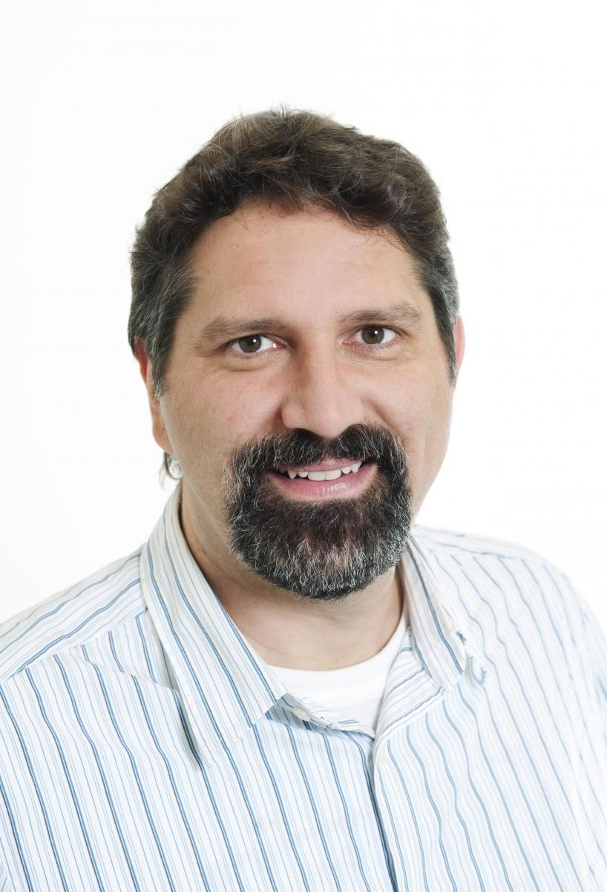
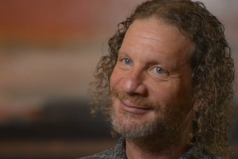
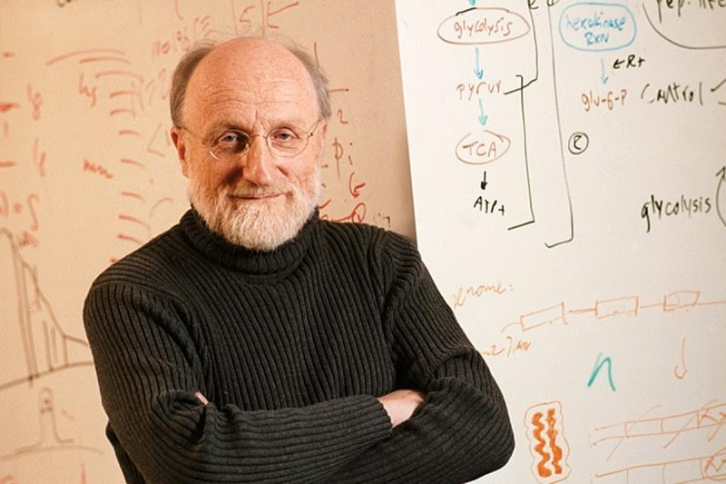
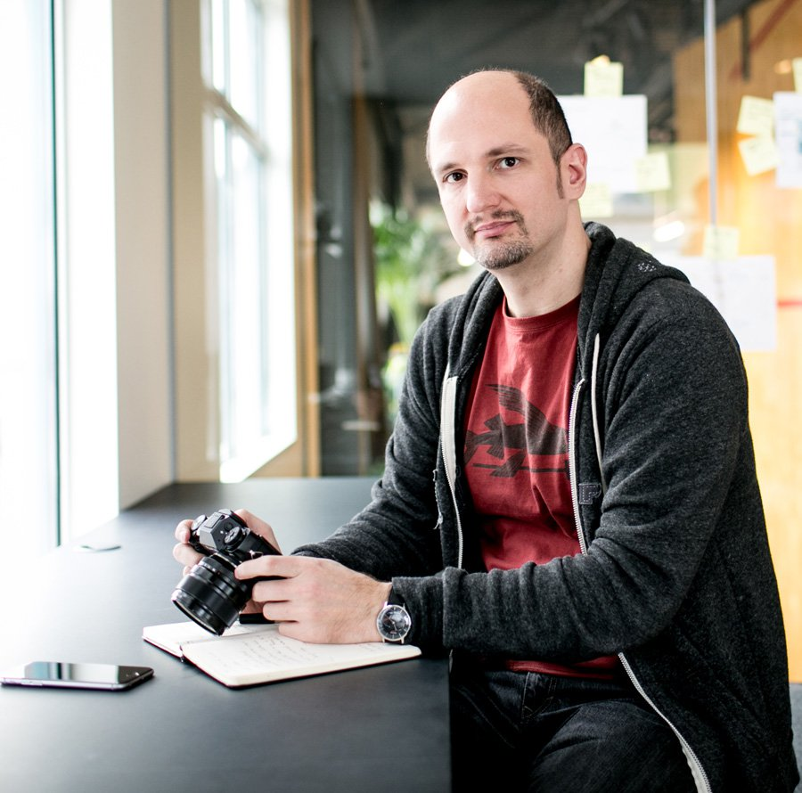
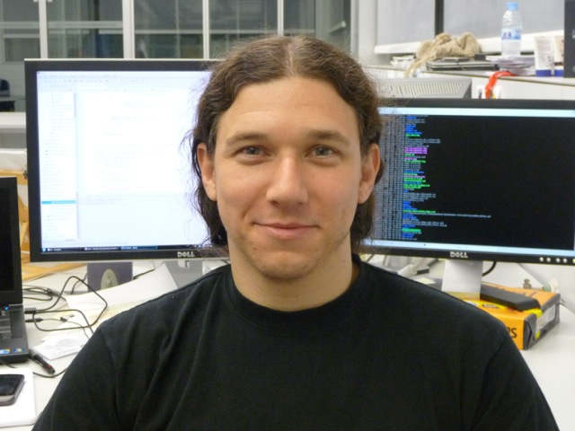
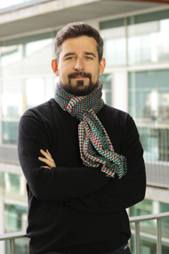

Program
BioVis'15 Program and Schedule (short version pdf)
BioVis'15 Program and Schedule book (long version pdf)
The final papers will be available under the following links:
Keynote Speakers
BioVis'15 features one keynote talks: a visualization keynote talk by Torsten Moller (University of Vienna) on Friday, July 10th.
Unfortunately the announced keynote by Chris Sander had to be cancelled.
|
 Copyright © Barbara Mair |
Torsten MöllerHead of research group of Visualization and Data Analysis Visual data science -- Advancing science through visual reasoning Modern science is driven by computers (computational science) and data (data-driven science). While visual analysis has always been an integral part of science, in the context of computational science and data-driven science it has gained new importance. In this talk I will demonstrate novel approaches in visualization to support the process of modeling and simulations. Especially, I will report on some of the latest approaches and challenges in modeling and reasoning with uncertainty. Visual tools for ensemble analysis, sensitivity analysis, and the cognitive challenges during decision making build the basis of an emerging field of visual data science which is becoming an essential ingredient of computational thinking. Biography Torsten Möller is a professor at the University of Vienna, Austria, since 2013. Between 1999 and 2012 he served as a Computing Science faculty member at Simon Fraser University, Canada. He received his PhD in Computer and Information Science from Ohio State University in 1999 and a Vordiplom (BSc) in mathematical computer science from Humboldt University of Berlin, Germany. He is a senior member of IEEE and ACM, and a member of Eurographics. His research interests include algorithms and tools for analyzing and displaying data with principles rooted in computer graphics, image processing, visualization and human-computer interaction. |
|

|
Larry HunterDirector of University of Colorado's Computational Bioscience Program The challenges of biological information visualization Interpretation of contemporary molecular assays (e.g. genome-wide studies of polymorphisms or gene expression) is a daunting challenge. Typical genome-scale experiments implicate dozens or hundreds of genes, gene products, or polymorphisms. The volume of information relevant to those genes can be overwhelming; the average human gene now has more than 2,000 publications about it. In order to benefit fully from existing knowledge, researchers must assimilate extensive information from many domains, often well outside their own areas of expertise. The amount, diversity, and complexity of all this potentially relevant information puts full exploitation of it beyond the time and attention capacity of even dedicated researchers. Failing to capitalize on all this relevant existing knowledge substantially reduces the efficiency of the entire biomedical research enterprise, delaying the development of both key insights and new therapies. The information visualization community needs to develop new user-specific information visualization approaches that focus biomedical researchers’ attention on the material most interesting to them. This talk will describe both these challenges and some possible approaches to dealing with them. Biography Dr. Lawrence Hunter is the Director of the University of Colorado's Computational Bioscience Program and a Professor of Pharmacology (School of Medicine) and Computer Science (Boulder). He received a Ph.D. in computer science from Yale University in 1989, and then joined the National Institutes of Health as a staff scientist, first at the National Library of Medicine and then at the National Cancer Institute, before coming to Colorado in 2000. Dr. Hunter is widely recognized as one of the founders of bioinformatics; he served as the first President of the International Society for Computational Biology (ISCB), and created several of the most important conferences in the field, including ISMB, PSB and VizBi . Dr. Hunter's research interests span a wide range of areas, from cognitive science to rational drug design. He has published more than 100 scientific papers, holds two patents and has been elected a fellow of both the ISCB and the American College of Medical Informatics. His primary focus recently has been the integration of natural language processing, knowledge representation, machine learning and advanced visualization techniques to address challenges in interpreting data generated by high throughput molecular biology. |
* Chris Sander's talk is cancelled due to unforeseen personal circumstances
|

|
Chris SanderComputational Biosystems, MSKCC Solving complicated problems in knowledge representation and visualization: cBioPortal, Pathway Commons, Precision Medicine Biography Chris Sander is the chair of the computational biology program at the Memorial Sloan Kettering Cancer Center in New York. His research focuses on analyzing and simulating biological processes at different levels of organization. This includes work on the identification of oncogenically altered pathways from genomic and molecular profiling in cancer, algorithms for the analysis of cancer genomics data, design of combinatorial cancer therapy, drug target identification, knowledge representation of biological pathways, protein evolution, specificity in protein networks, and the function of small RNAs. |
Primers Speakers
Min ChenBSc, PhD, FBCS, FEG, FLSW Four Levels of Visualization In this talk, the speaker will discuss four levels of visualization in the context of bioinformatics. The four levels are disseminative, observational, analytical and model-developmental visualization, which reflect different visualization tasks as well as different levels of complexity. The speaker will also briefly discuss the latest development of an information-theoretic measure for optimizing the cost-benefit ratio of a data analysis and visualization process. Biography Min Chen developed his academic career in Wales between 1984 and 2011. He is currently the professor of scientific visualization at Oxford University and a fellow of Pembroke College. His research interests include visualization, computer graphics and human-computer interaction. He has co-authored some 160 publications, including his recent contributions in areas of volume graphics, video visualization, face modelling, automated visualization and theory of visualization. He has been awarded over £11M research grants from EPSRC, JISC (AHRC), TSB (NERC), Royal Academy, Welsh Assembly Government, HEFCW, Industry, and several UK and US Government Agencies. He is currently leading visualization activities at Oxford e-Research Centre, with a team of researchers working on a broad spectrum of interdisciplinary research topics, ranging from the sciences to sports, and from digital humanities to cybersecurity. His services to the research community include papers co-chair of IEEE Visualization 2007 and 2008, Eurographics 2011, IEEE VAST 2014 and 2015; co-chair of Volume Graphics 1999 and 2006, EuroVis 2014; associate editor-in-chief of IEEE Transactions on Visualization and Computer Graphics; and co-director of Wales Research Institute of Visual Computing. He is a fellow of British Computer Society, European Computer Graphics Association, and Learned Society of Wales. |
|  |
Robert KosaraResearch Scientist How to Visualize Data Visualization of data isn’t just about creating pretty pictures for the cover of Nature, but really about being able to perceive and understand data. I will give a brief introduction to the basics of data visualization, show some common techniques and tools, and walk you through some examples. Presentation will not be ignored entirely, though it has to be preceded by exploration and analysis of the data. Biography Robert Kosara is a research scientist at Tableau Software. His focus is on the communication of data through visualization and visual storytelling. Robert is also working on furthering our understanding of visual perception and cognition, so we can make data easier to understand and develop tools to communicate it more effectively. His full list of publications can be found on his vanity website. Before joining Tableau in 2012, Robert was Associate Professor of Computer Science at The University of North Carolina at Charlotte. Robert received his M.Sc. and Ph.D. Degrees in Computer Science from Vienna University of Technology (Austria). In his copious spare time, Robert likes to run long distances and writing articles for his website, eagereyes.org. |
Challenges Speakers
|  |
Ignacio MedinaHead of Computational Biology Lab New Advanced Solutions for Genomic Big Data Analysis and Visualization
Biography
Ignacio Medina received his BSc in Biochemistry and Molecular Biology from the University of Valencia, Spain, in 2001, and the BSc in Computer Science from the Polytechnic University of Valencia, in 2004. In 2009 he obtained the MSc in Genetics from University of Valencia. In 2006, he joined the Department of Bioinformatics and Genomics at the Prince Felipe Research Center, as a Bioinformatician and Researcher, and in 2010 became a Project Manager of several clinical and software development projects. In 2014, he joined EMBL-EBI as a Project Manager and Senior Software Architect at EBI Variation Team. In 2015, he joined University of Cambridge as a Head of Computational Biology Lab at HPC Service. His current research interests include HPC and big data software development for genomic-scale data analysis and visualization. He participates in several international projects such as EGA or Genomics England. He has authored more than 35 papers in international peer-reviewed journals.
|
|  |
Marc Martí-RenomICREA Research Professor Visualizing 3D GenomesThe genome is conventionally represented and explored as a linear sequence, however chromatin is dynamic. The spatial organization and dynamics of the chromatin can be computationally modeled. The extent, detail and utility of these types of models present challenges in representing and interacting with such large, multi-scale models. Unfortunately, current genome browsers have limited overview 3D spatial data and do not provide an adequate end-user experience while browsing such generated models. New web-based, open-source, cross-platform technologies provide now the opportunity to address these issues with increasing ease, stability and security. Despite the limitations in three-dimensional (3D) representation due to occlusion, subjectivity and interpretation inherent in human system, 3D visualizations can assist navigability, comprehension and discovery by leveraging human visual processing, spatial reasoning and creativity. We will describe a new Web-based browser that aims at visualizing the genome from all its dimensions (linear to 3D). Our approach, called TADkit, aims at integrating ‘1D’ genome sequence, its ‘2D’ aligned annotations and its ‘3D’ models to give a more complete vision of the forms and interactions. Biography Marc Marti-Renom obtained a Ph.D. in Biophysics from the UAB where he worked on protein folding under the supervision of Professors B. Oliva, F.X. Avilés and M. Karplus. He conducted postdoctoral training on protein structure modeling at the Sali Lab (Rockefeller University) as the recipient of the Burroughs, Wellcome Fund fellowship and was then appointed Assistant Adjunct Professor at UCSF. Between 2006 and 2011, Prof. Marti-Renom headed the Structural Genomics Group at the CIPF in Valencia (Spain). Currently, he is a ICREA research professor and leads the Genome Biology Group at the National Center for Genomic Analysis (CNAG) and the Structural Genomics Group at the Centre for Genomic Regulation (CRG), both in Barcelona. His group is broadly interested on how RNA, proteins and genomes organize and regulate cell fate. He is an Associate Editor of the PLoS Computational Biology and BMC Structural Biology journals and has published over 75 articles in international peer-reviewed journals. |